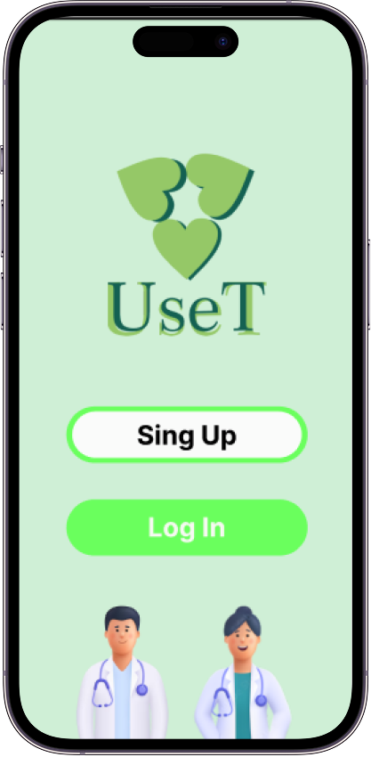
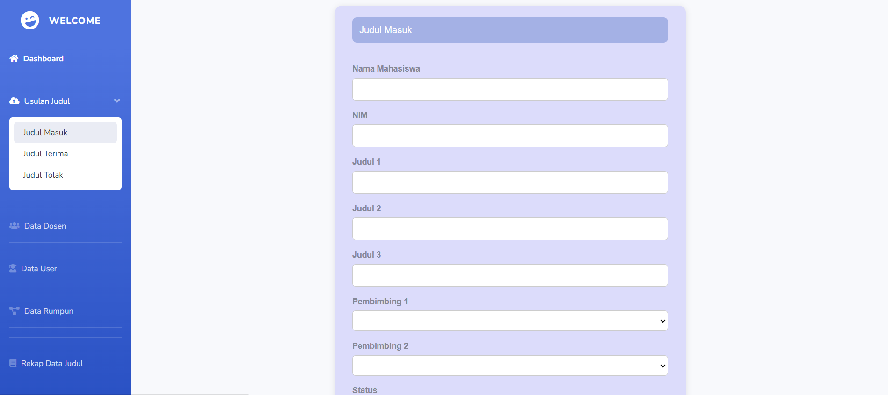
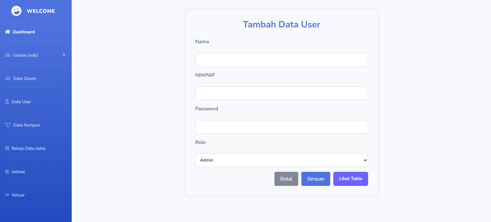
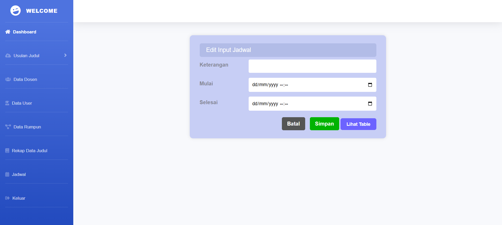
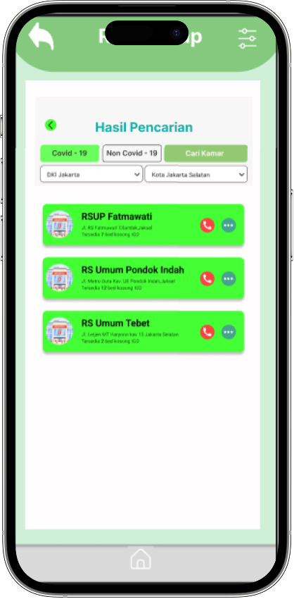
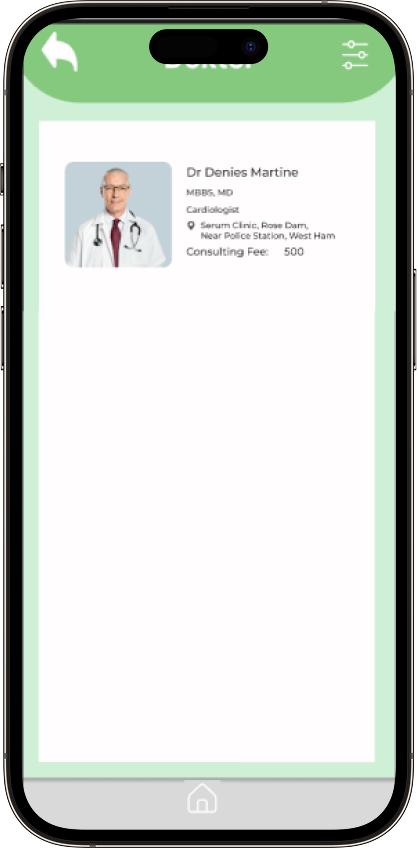

Aplikasi USET merupakan desain UI/UX aplikasi konsultasi kesehatan yang memudahkan pengguna menemukan rumah sakit terdekat, mengakses layanan gawat darurat, dan melakukan konsultasi dengan dokter secara online.


